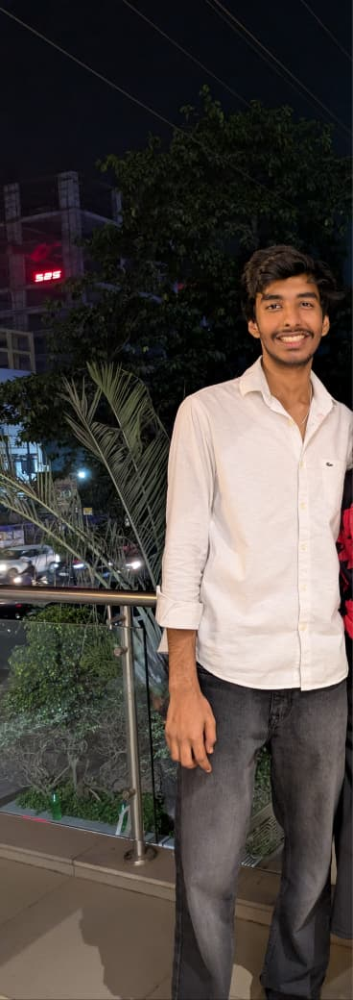

01
☁
Technology
Hands-on exposure to AWS, cloud infrastructure, data pipelines, CI/CD and containerized deployments.
I'm Aditya Rajwansh, an Electronics & Communication Engineering student exploring AWS, Cloud, Data Engineering and DevOps — while developing the teamwork, coordination and initiative needed to turn ideas into action.

More than a technical profile.
My journey with AWS started in my first year. Since then, I've kept learning through industrial training, certifications and hands-on projects in cloud computing, data engineering and DevOps.
Outside the technical side, I enjoy working with people, coordinating responsibilities, communicating clearly and contributing to college activities and events. I believe successful execution comes from planning, teamwork, adaptability and taking ownership.
Hands-on exposure to AWS, cloud infrastructure, data pipelines, CI/CD and containerized deployments.
Interested in planning, task coordination, communication, responsibility sharing and smooth execution of activities.
Comfortable contributing in team-based environments, taking responsibility and adapting when plans change.
Enjoys breaking practical problems into smaller tasks and learning through projects, challenges and experimentation.
Growing from fundamentals toward practical cloud and development workflows.
End-to-end serverless data workflow for ingestion, transformation, cataloging and analytics.
Automated deployment pipeline connecting GitHub, Jenkins, Docker, Amazon ECR and EKS.
Infrastructure-as-Code learning project exploring Terraform configuration and AWS provisioning concepts.
Jenkins workflow for automated source checkout, Docker image creation and container deployment.
Repository ↗Foundational database and data-processing project built during the first year.
Industry-oriented training focused on AWS cloud and DevOps concepts through practical learning.
Completed industrial training from June 2 – July 2, 2025, beginning a deeper hands-on journey with AWS.
Google Analytics, Google Ads AI-Powered Performance Ads and Campaign Manager 360 certifications.
Participated in SIH as part of a team, contributing to ideation, development and problem solving.
I'm always interested in learning, collaborating and contributing to meaningful college and technology initiatives.